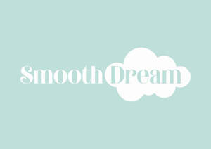

Trade Mark Journal No.2025/020 16 May 2025
UK00004192564 22 April 2025 (3)

International priority date claimed: 23 October 2024
(European Union Intellectual Property Office (EUIPO))
(019095220)
- Class 3
- Hair creams; hair care creams; creams for fixing hair; hair care creams [for cosmetic use]; hair wax; hair mascara; hair oils; hair emollients; hair balm; hair rinses; hair lotion; hair tonic; hair dye; hair gel; hair conditioner; hair moisturisers; hair texturizers; hair shampoo; hair relaxers; hair bleachers; hair decolourants; hair masks; hair frosts; hair mousse; hair nourisher; hair fixers; hair balsam; hair liquids; hair powder; hair pomades; hair sprays; hair lacquers; hair glaze; hair neutralizers; hair chalks; hair conditioners; hairstyling masks; hairstyling serums; hairdressing preparations; hair care agents; hair removal preparations; hair and body wash; cosmetic shower and bath foam; cosmetic shower and bath gel; hair tonics [for cosmetic use]; hair rinses [for cosmetic use]; adhesives for affixing false hair; products for protecting coloured hair; refill packs for hair fixer dispensers; soaps; preparations for the care of the skin, hair, scalp and body; teeth cleaning preparations; mouth cleaning preparations, not for medical use; toilet water; eau de cologne; non-medicated salts, cosmetic creams, lotions, milks, oils and powders for the care and the cleansing of the skin, body, hands and feet; deodorants for personal use; anti-perspirants, not for medical use; talcum powder for cosmetic use; sun-tanning preparations [cosmetics]; essential oils.
THEORIGINALSMOOTHCOMPANY LIMITED
Representative: Pinsent Masons LLP